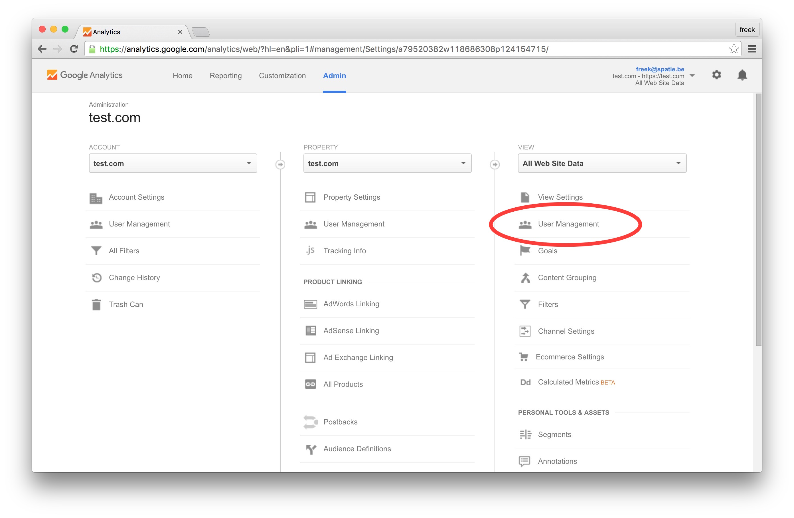
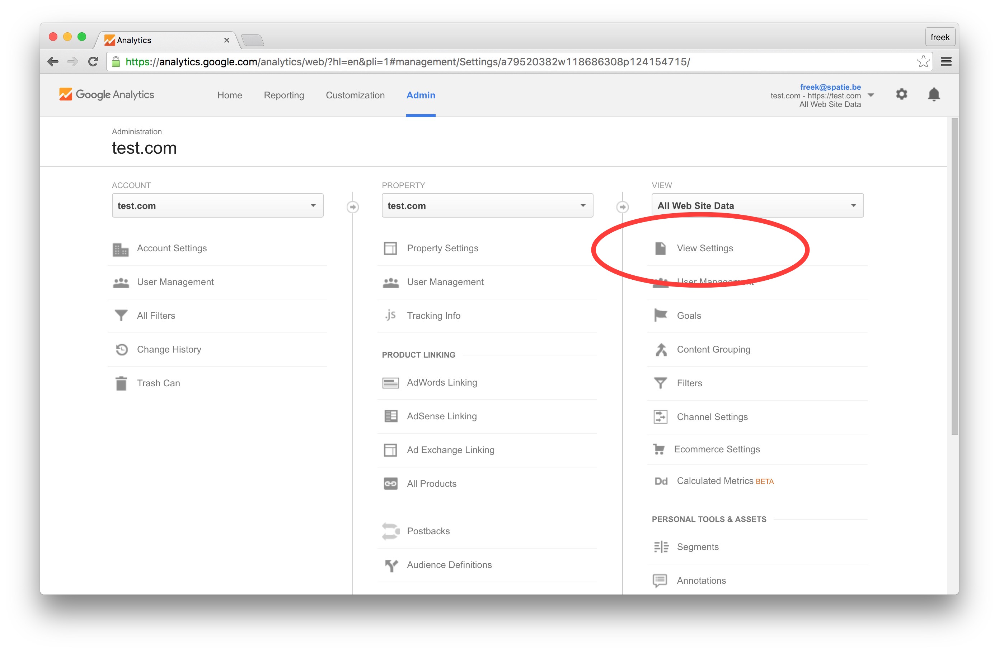

Creating a new database
First thing you want to do before installing BeDrive is to create a new database on your mysql server. If you already know how to do this/or have already created one just skip to the next step.
Your host will most likely be running phpMyAdmin as mysql manager, if that's the case here's a step by step guide (if not the proccess will be very similar on other managers).
Login to your control panel, find and click phpMyAdmin link:  Click on the database tab in the top menu, enter any name you like and click create.
Click on the database tab in the top menu, enter any name you like and click create.
Uploading Files
After creating a database, unzpip the .zip file you donwloaded from CodeCanyon and upload the contents of bedrive folder to your servers root folder (usually called www or html or something similar) or a sub-directory. It's important that you only upload contents of bedrive folder, otherwise you will have "bedrive" in your site url.
Shared hosting providers usually have a web based file manager, but you should use something like Filezilla to do the upload as the web based managers can cause various problems fairly often.
Make sure that storage and all the sub-folders are writable by your server (have 777 permissions if you are on shared hosting). You can change files and folders permissions by right-clicking them in the filemanager, clicking file permissions, and then entering 777 in the permissions field.
Optional. Point your domain or sub-domain to "public" folder inside BeDrive directory instead of BeDrive directory itself. While this is optional, you should do it if possible to increase security and potentially avoid issues on some servers.
Installing BeDrive
After you uploaded BeDrive files, simply open up your site url and follow on-screen instructions to finish the installation.
Updating from version 1.9.4 or earlier:
- Make sure you have at least PHP 5.6 on your server.
- Extract the .zip file you downloaded from CodeCanyon.
- Upload contents of "bedrive" folder to the main BeDrive folder on your server (overwrite old files if needed).
- On your server, copy application/.env file to main BeDrive folder.
- Rename BASE_URL to APP_URL in .env file. Make sure the url is correct.
- Surround any values that contain spaces in .env file with double quotes. For example DATABASE_NAME="name with spaces". Important! Don't add qoutes to values that have no spaces.
- Delete index.php file in main BeDrive folder.
- Move assets/avatars folder into public/storage folder.
- Visit http://yoursite.com/secure/update url and click Update Now button. (make sure you are logged in as admin)
Updating from version 2.0.0 or newer:
- Extract the .zip file you downloaded from CodeCanyon.
- Upload the contents of "bedrive" folder to the main BeDrive folder on your server.
- Visit http://yoursite.com/secure/update url and click Update Now button. (make sure you are logged in as admin)
sourcecode folder inside the .zip can be ignored, unless your plan to modify BeDrive code.
- Register for regular google account, if you don't already have one.
- Open this url, create a new project, click Credentials in left sidebar, select Oauth Client ID -> Web Application.
- Enter http://your-site-url.com/secure/auth/social/google/callback into Authorized Redirect URIs field and click Create.
- Copy/paste Client ID and Client Secret into settings page.

Outgoing Mail
Outgoing mail includes all emails that are sent from your application to the user. Password reset, user confirmation, notifications and more.
In order for outgoing mail to work, you will need to configure it in admin area > settings > mail page.
Unless you already have one of the other available mail methods set up, we highly recommend using mailgun. It's free for up to 10000 emails a month and you will avoid many of the problems associated with traditional SMTP servers.
Mailgun
Although you are not required to add a credit card for mailgun, it's recommended that you do, because you will be put on a lower priority queue without a credit card, which could result in slower email delivery.
- Register here
- In the next page click Add Your Domain button, then enter your site url in the Domain Name field and click Add Domain
- Verify your domain on mailgun. This will differ depending on your hosting, but you should be able to find a guide in your hosting providers documentation, mailgun documentation or simply via google search.

SMTP
If you want to use SMTP, go to admin area > settings > mail page and simply enter your smtp server credentials.
Analytics
Registering for google analytics account
Analytics page is powered by google analytics so you will need to register for google analytics and add supplied code to your site. Here's how to do it.
Important! This will only enable tracking. See below on how to get the analytics page on the site working.
- 1. Go to this url. You will be prompted to login to your google account or create a new one if you don't have it already. Do it.
-
2. Click on Admin -> Property -> Create new Property -> fill out required fields -> click on get tracking ID


- 3. Go to admin -> settings -> analytics and paste the code into google analytics tracking code field (only paste in the code that starts with UA, not the whole script).
Getting Service Account Key
To get analytics page on the site working, you will need to get a service account key. Head over to Google API's site and create or select a project.

Next, specify which API's the project may consume. In the list of available API's click "Google Analytics API". On the next screen click "Enable".
Now that you've created a project that has access to the Analytics API, download a file with the credentials. Click "Credentials" in the sidebar. You'll want to create a "Service account key".

On the next screen you can give the service account a name. You can name it anything you'd like. Select "Project > Owner" Role. In the service account id you'll see an email address. Note this address as it will be needed later on. Select "P12" as the key type and click "Create" to download the P12 file.
Rename downloaded file to "certificate.p12" and upload it to your server in "storage/laravel-analytics" directory.
Granting permissions to your Analytics property
Go back to google analytics site and "User management" page in the Admin-section of the property.
Add a new user using email address you have saved earlier. Read only access is enough.
Getting the view ID
The last thing you'll have to do is fill in credentials in BeDrive "admin > settings > analytics" page. You have service email and google ID from earlier, get View ID from "View setting" in the Admin-section of the property.
Support
If you have any issues or questions, you can submit a new ticket on our support site here. Thank you!
Social Login
In order for social logins to work properly, you will need to register for an application on their respective sites and enter the credentials you receive into admin area > settings > authentication page.